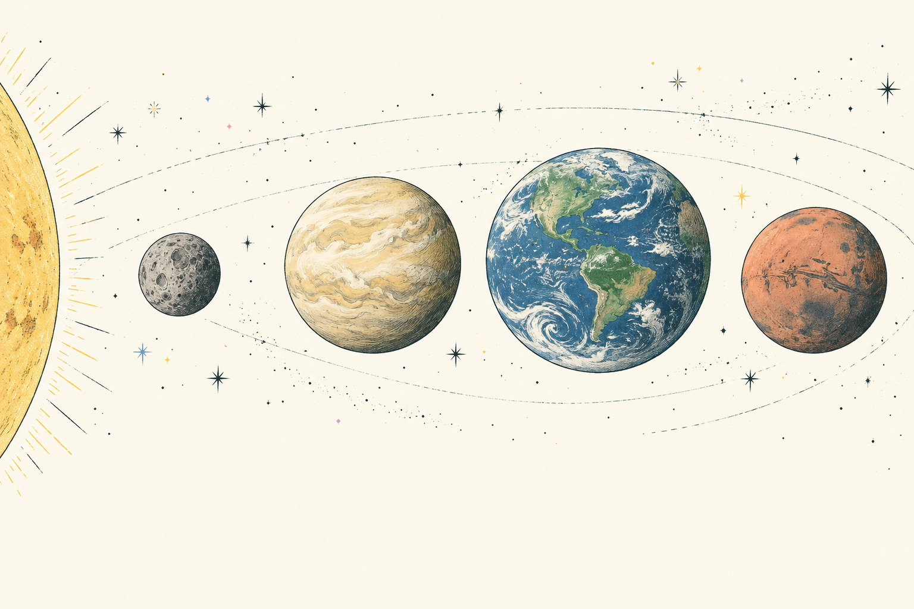
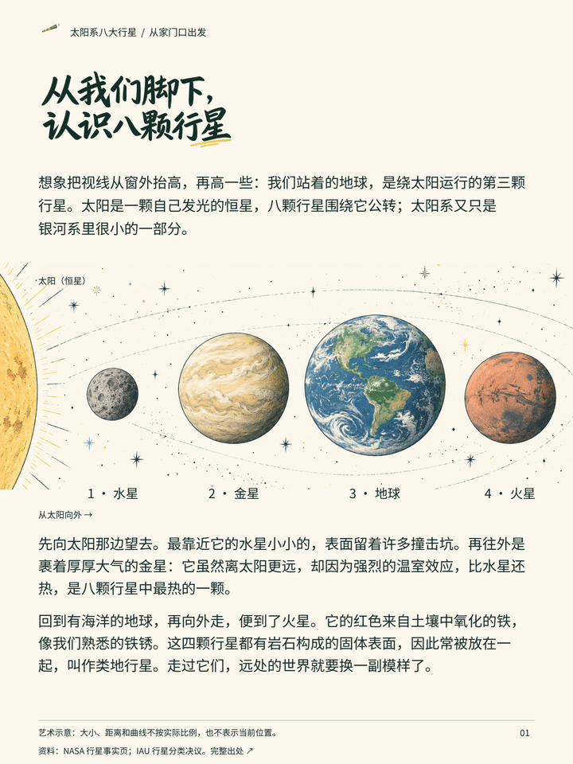

从一份资料，到有人愿意读的图文
从你想弄明白的一个问题开始，把资料整理成清楚的解释，再配上能帮助理解的画面。这里有两个独立 Skill，按手上的内容来选就好。

16 秒，无旁白，展示实际成稿。分镜 · GIF
还可以下载：9:16 竖版 · 1:1 方版。都是完整 16 秒，每个 MP4 不到 600 KB。
从理解资料、拆解知识和自然表达开始，再完成统一美术与可继续修改的交付。
skills/knowledge-to-friendly-product/SKILL.md
打开完整 Skill · 安装与检查清单
让能读取文件的 AI 助手读完整个 Skill 目录。长期安装位置依宿主而定；复制成功后，还需在宿主中确认它已被发现。方法文档本身无需 Python。
请读取 knowledge-to-friendly-product 这个 Skill。主题是【主题】，读者是【已有知识与阅读情境】，资料是【文件或链接】。请做成【载体和页数】，沿用【风格参考】，保留【不可改项】。先核实知识，再写成自然连贯的图文；插画和图标解释内容，保留来源、可编辑源与实际检查记录。
方括号是需要你填写的内容。图像生成需要可用图像工具；复现案例排版需要项目 requirements.txt 中的依赖。不要把工具缺失写成已完成。

这是一份手动检查清单。勾选只记录你的判断，不会自动验证文件。
已勾选 0 / 5 项